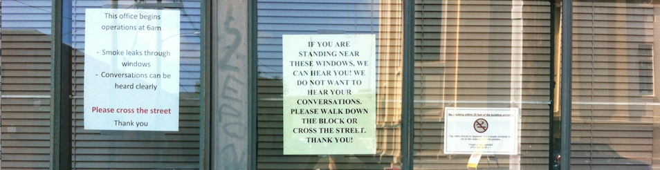

| Home | Resume | Projects | Dev Bootcamp Blogs | Main Blog |  |
 |
 |
Date: September 27, 2014 |
Tags: Dev Bootcamp, DBC |

Pair programming. It's a major element at most development bootcamps. DBC is no exception; it takes pressure off the teachers, forces human interaction, and according to a bevvy of TechCrunch articles, is the wave of the future.
19 weeks to learn software development is not a long time. It's clear that DBC's agenda is to deploy fleets of jr. devs who can, at the very least, communicate. The required twice-a-week-minimum pairing sessions and mandatory feedback write-ups aim to mold students that are open to constructive criticism and comfortable asking questions.
The first few weeks of pairing were terrifying. The fear was two things: first, a vague anxiety about giving up control. Second, haunting premonitions of being way behind the skill set of my pair, dragging them down, and generally being a hindrance.
I've been thinking a lot lately about control. Every morning I walk by the window in the picture above. Over the past year the signs have multiplied and become more aggressive. I imagine the person sitting on the other side of the glass, endlessley frustrated over circumstances they cannot control and I breathe a sigh of relief that I'm not in their shoes. I've been reading The Way Of The Peaceful Warrior that posits attachment to feelings of control cause suffering. I believe there's something to this idea.
Pairing sessions, at least partially, absolve control. You have to collaborate. You have to play well with others. You have to be vulnerable to someone rejecting your ideas. Ultimately I've found only in giving up control over a situation can you open yourself up to learning from someone else.
Early on I faced my fears and joined forces with students significantly more knowledgeable. These have been the most valuable sessions. One particular pairing session exponentially advanced my approach to problem-solving. Instead of my normal routine of 1. read the challenge, 2. dive in and 3. never look back, I learned to slow down, think about what data structures to use, read the relevant Ruby Docs on those structures, then talk through possible approaches. I'm relieved my more-advanced peers have been exceptionally gracious about walking me through when I'm in not at their level.
A major component of DBC is incorporating feedback that's actionable, specific, and kind. My hardest struggle was writing feedback to a pair who I felt acted dissmissive. My career in management has giving me a lot of practive giving and receving constructive criticism. I've been able to build stellar teams because I learned to be really honest without being a dick.
Everybody wants the truth, but nobody wants to be honest. - unknownHours went by and I sat there rereading the feedback I wrote, nervous about hitting send, and feeling passive aggressive giving criticism in writing. I've pulled many an employee into my office for a closed-door chat, but an email just felt wrong. It was my first guided pairing. Feeling weird about being observed and half-expecting our guide would address what I saw as a problem, I never spoke up.